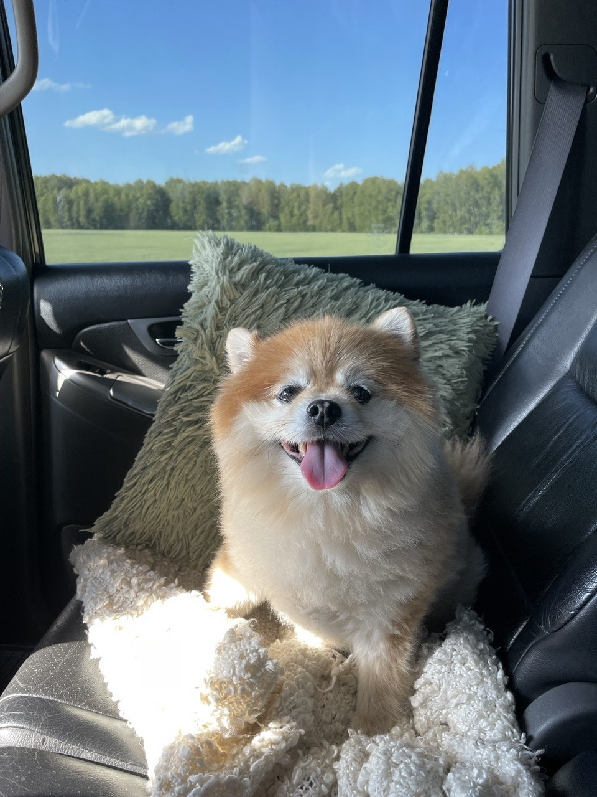

Привет! Я Соня Салмина, приятно познакомиться!
Обо мне
Как вы уже поняли, меня зовут Соня. Живу в Новосибирске. Занималась английским на протяжении многих лет, доросла до b1 и никак не могу перейти на b2, в общем, я что-то между()
Также у меня есть пес, он забавный малый
Знакомьтесь - это Твикс
Образование
На данный момент учусь в колледже, перехожу на третий курс по специальности разработчик веб и мультимедийных приложений.
Еще с начала второго курса хотела начать изучать какой-нибудь курс, потому что в колледже была скучная и ненужная мне информация. Поэтому я выбрала вас, с наиболее интересной и понятной мне профессией.
Опыт работы
К сожалению, я еще нигде не работала(
Хобби
Как таковых хобби у меня нет, раньше занималась плаванием.
Как я стала разработчиком
- 19 июня начала изучать курс по разработке
- 1 июля приступила к изучению html
- 10 июля приступила к изучению css